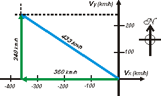

NO ME SALEN
EJERCICIOS RESUELTOS DE FÍSICA DEL CBC
|
|

|
NMS c7.17* - Un avión vuela hacia el oeste a 600 km/h durante 3 horas y luego hacia el norte con la misma rapidez, durante 2 horas. Su vector velocidad media, en un sistema de coordenadas como el indicado, es
|
a) – 600 km/h î + 600 km/h ĵ
b) – 721 km/h î + 1081 km/h ĵ
c) – 200 km/h î + 300 km/h ĵ
d) – 849 km/h î + 849 km/h ĵ
e) – 432 km/h î + 432 km/h ĵ
f) – 360 km/h î + 240 km/h ĵ |

|
|
|
|
î y ĵ son vectores de módulo 1, se llaman versores y tienen por objeto contagiar el carácter vectorial a un número y decir para dónde apunta. Suelen representarse con un sombrerito o una comita arriba (en lugar del punto típico de la i y la j).
Este bellísimo problema hizo estragos. Se tomó en un examen y lo respondió correctamente apenas el 17,4 % de los estudiantes (restando el 1/6 que le acertó por azar). Casi todos habían querido resolverlo de un plumazo, con una cuenta, con una fórmula (qué bajo concepto tienen de la física), y muy pocos -un 17,4 %- se había tomado el trabajo de hacer gráficos, y esquemas. Arranquemos por ahí. |
|
El primer desplazamiento, hacia el Oeste, se hizo a 600 km/h y duró 3 horas. Ese desplazamiento, Δra, valió entonces 1.800 km. Ni hace falta que te lo explique.
Con el mismo razonamiento, el segundo desplazamiento, Δrb, de 2 horas, fue de 1.200 km.
El desplazamiento total, Δrt, lo podemos calcular por Pitágoras. |

|
|
|
Y resulta ser igual a Δrt = 2.163 km, pero para llevarlo a término utilizó 5 horas. De modo que si quisiéramos conocer el módulo del vector velocidad media total, ese que representé en celeste, tendríamos que dividir el desplazamiento total por el intervalo total.
vmt = Δrt / Δtt
vmt = 2.163 km / 5 h
vmt = 433 km/h
Pero el problema no nos ofrece este valor como respuesta posible. El vector velocidad media total está expresado en función de sus componentes ortogonales, que podríamos llamar vmtx y vmty.
Un modo un poco chancho de encontrar la solución es buscar cuál de todos los pares que se ofrecen en las respuestas cumplen que su suma pitagórica (su suma vectorial) es igual a vmt = 433 km/h. Y hay uno solo. Pero hay otros métodos más dignos.
La velocidad media total en la dirección equis, vmtx, será igual a |
|
vmtx = Δra / Δtt
vmtx = -1.800 km / 5 h
vmtx = -360 km/h
Y análogamente
vmty = Δrb / Δtt
vmty = 1.200 km / 5 h
vmty = 240 km/h
De modo que la respuesta será |
 |
|
|
| |
vmt = – 360 km/h î + 240 km/h ĵ |
opción f) |
|
|
| DESAFIO: Resolvé el problema de este otro modo. Averiguá el ángulo que el desplazamiento total forma con el eje equis. Luego, con el seno y el coseno de ese ángulo, descomponé el vector velocidad media total en sus componentes x e y, y verificá que de ese modo llegás al mismo resultado que llegué yo. |
|
| |
 |
| |
| *Ejercicio tomado en el primer parcial de Física, en Ciudad Universitaria, el primer cuatrimestre de 2006. |
|
|
| |
|
| Algunos derechos reservados.
Se permite su reproducción citando la fuente. Última actualización ene-07. Buenos Aires, Argentina. |
|
|
|